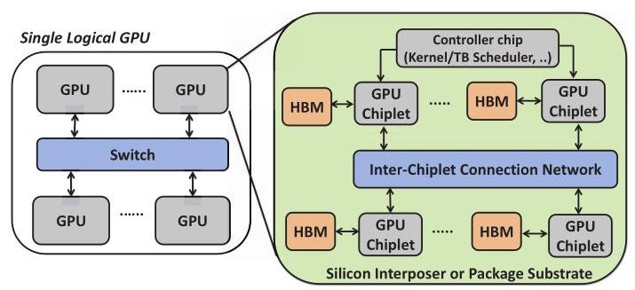
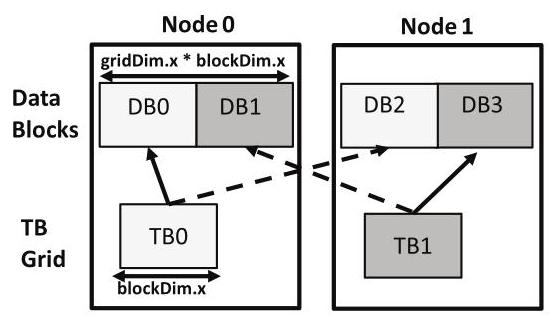
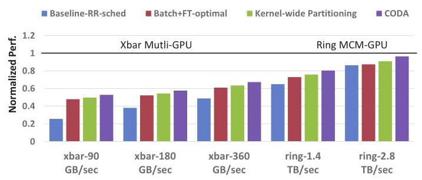
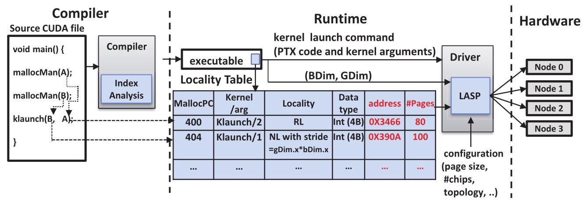
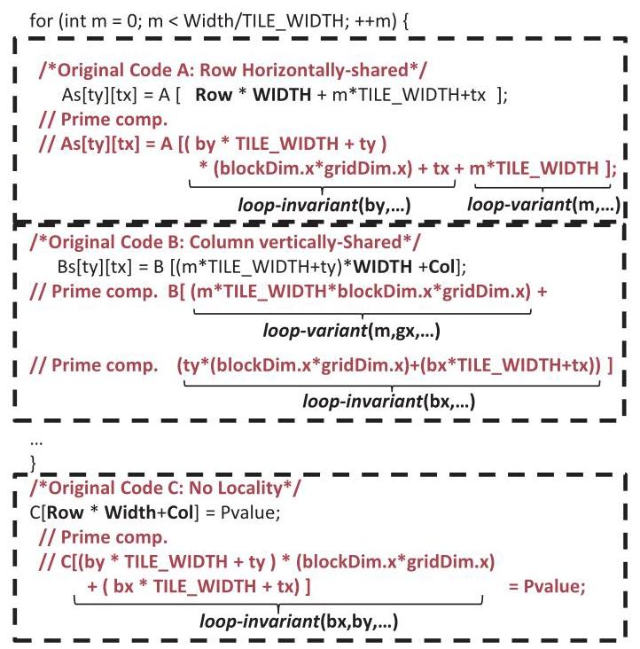
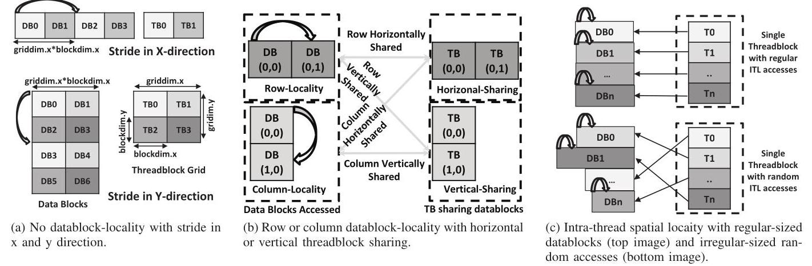
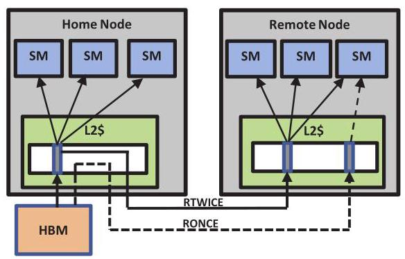
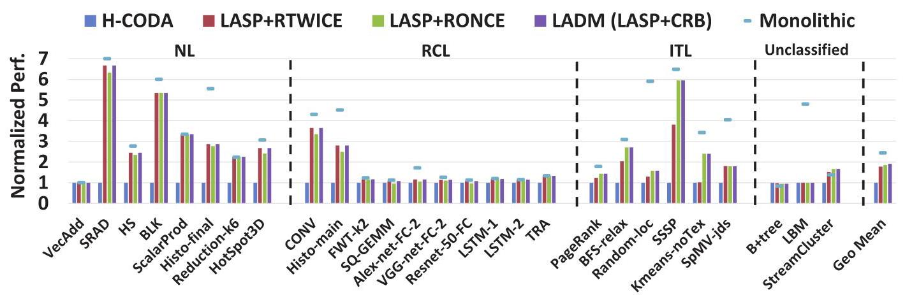
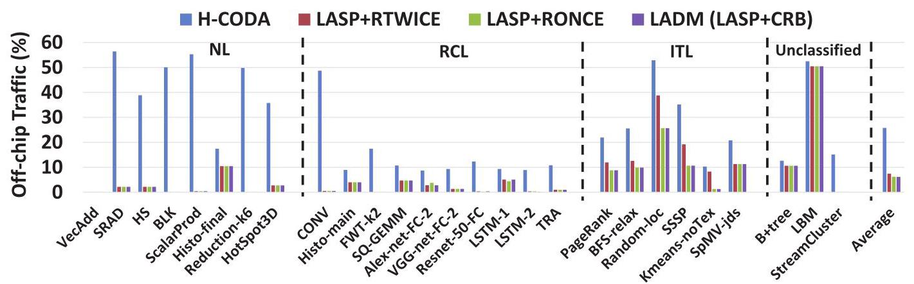
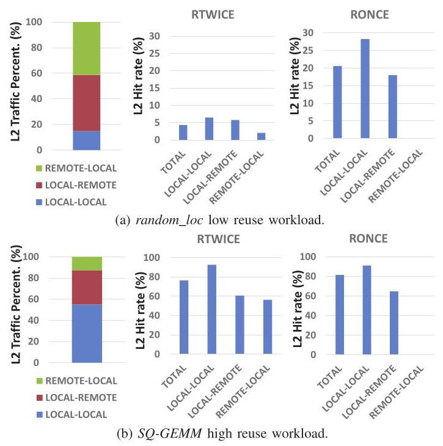

Locality-Centric Data and Threadblock Management for Massive GPUs 深度解读
作者：Mahmoud Khairy, Vadim Nikiforov, David Nellans, Timothy G. Rogers
会议/期刊：MICRO 2020
一句话总结：本文提出 LADM，用 threadblock-centric static index analysis 识别 GPU 程序的数据访问局部性，并把这些信息用于 NUMA-GPU 的 page placement、threadblock scheduling 和 remote cache insertion，从而在未来层次化 multi-GPU/chiplet GPU 上减少跨节点数据移动。
一、问题定义
这是一篇非 First 类型的改进性工作：NUMA-aware GPU 不是本文首次提出，前面已有 MCM-GPU、CODA、多 GPU kernel-wide partitioning、Locality Descriptor 等方案。本文的切入点是，随着单个 monolithic GPU die 继续扩大越来越不现实，未来 GPU 更可能由多个 discrete GPU 和每个 GPU 内部的多个 chiplet 组成；这种层次化结构会带来更复杂的 NUMA effect，而已有方案通常只抓住 page alignment、first-touch、kernel-wide chunk 或一类局部性，无法同时处理 threadblock stride、row/column sharing、stencil adjacent locality、intra-thread locality 和 input-size-aware scheduling。

Fig. 1 的价值在于把问题规模具体化：未来的 programmer-visible GPU 可能是一个逻辑设备，但物理上有 GPU 间互连和 GPU 内 chiplet 互连两层局部性。LADM 要解决的不是单纯“把数据放近一点”，而是在这种层次化拓扑下，让 page、threadblock 和 cache insertion policy 与访问模式保持一致。
动机评估：动机相当 solid。论文用三类证据支撑问题存在：第一，monolithic GPU 受 yield、photoreticle limit 和制造成本限制；第二，reactive NUMA 方法在 GPU 上代价很高，例如 first-touch page fault 会让 SM stall 20-50 微秒；第三，作者复现实验显示 CODA 虽是较强 baseline，但在 xbar-90 GB/s 和 ring-1.4 TB/s 配置下也只达到 monolithic GPU 的 52% 和 80%，说明只解决 page alignment 远远不够。弱点是论文主要面向“未来大规模层次化 GPU”，部分硬件接口和透明 runtime 支持在当时真实 GPU 上不可直接验证。
核心 Insight：GPU 的可调度单位是 threadblock，而不是 CPU NUMA 里粗粒度的线程；单个 GPU thread 几乎没有足够的全局内存局部性，但一个 threadblock 或一组 threadblock 的 index expression 往往揭示了它们会访问哪些 datablock。只要把传统 index analysis 扩展为 threadblock-centric analysis，就能在 kernel launch 前预测数据与计算的匹配关系，进而主动做 placement/scheduling/cache policy，而不是运行时被动迁移。
二、相关工作
论文把相关工作按“解决 NUMA locality 的层次与方式”来组织。第一类是 CPU/多核 NUMA 的 reactive memory placement、migration、replication 和 thread clustering。这些方法在 CPU 上合理，因为线程更粗粒度、迁移次数可控；但 GPU 有海量细粒度 thread，page migration 和 page fault 容易直接吞掉收益，并且 GPU memory capacity 更紧张，复制数据也更贵。
第二类是 NUMA-GPU/MCM-GPU 的透明机制。Batch+FT 依赖 batched threadblock scheduling 和 first-touch page placement，能自然利用某些首次访问局部性，但 page fault 开销大，batch size 也不随 datablock size 调整。Kernel-wide partitioning 把 grid 和 allocation 都切成 N 个连续块，简单透明，但一旦访问 stride 与切分边界不匹配，就会产生大量 remote traffic。CODA 使用 compiler index analysis 解决 threadblock 与数据 page alignment 问题，但只覆盖较窄的 locality pattern，并需要 sub-page address mapping 支持。
第三类是显式软件接口，例如 Locality Descriptor 和 threadblock clustering annotation。这些方案表达能力强，可以让程序员告诉 runtime 数据访问局部性，但牺牲透明性，并要求程序员理解硬件拓扑与 workload 行为。LADM 的定位是吸收这些接口能表达的局部性信息，但通过编译器自动推断。
第四类是 cache management、remote caching 和 coherence 方向。Milic 等的 multi-GPU cache coherence、Young 等的 DRAM-cache、Ren 等的层次化 L2 coherence 都能与 LADM 互补。本文真正补上的空白是：将访问模式分类、数据放置、threadblock 调度和 cache insertion 放到一个统一的 locality-aware runtime 决策里。

Fig. 3 解释了为什么 kernel-wide partitioning 不够：即使 grid 和 data 都被连续切分，如果 threadblock 的 stride 与节点边界错位，两个 threadblock 仍会各自访问一半 remote datablock。这个例子支撑了本文“需要理解 threadblock motion，而不是只看 allocation chunk”的判断。

Fig. 4 是 motivation 的定量证据：在不同 interconnect bandwidth 下，CODA 相比 Batch+FT-optimal 和 kernel-wide 更好，但与 monolithic GPU 仍有明显差距。它说明单靠更快互连或单一 placement rule 不能稳妥解决未来 NUMA-GPU 的性能问题。
三、技术挑战
挑战 1：GPU locality 的观察粒度不在单个 thread。 CPU 上单个 thread 往往有较长时间和空间局部性，静态分析单线程 loop 就能指导 NUMA placement；GPU 中一个 thread 只做很少工作，真正有意义的访问模式通常跨 thread、跨 threadblock，必须把 grid dimension、block ID、thread ID 和 loop induction variable 放在同一个分析框架里。
挑战 2：访问模式多样，不能用单一切分策略覆盖。 No locality、row/column locality、intra-thread locality、stencil adjacent locality、strided motion 对 page placement 和 scheduling 的要求不同。比如 GEMM 的 A/B/C 三个矩阵可能分别偏好 row-binding、column-binding 或 no-locality placement，同一个 kernel 内还会出现 locality disagreement。
挑战 3：placement 必须与 threadblock scheduler 同步决策。 只把 page 放到某个节点不够，如果 scheduler 把访问该 page 的 threadblock 发到另一个节点，remote access 仍会发生。反过来，scheduler 的 batch size 也依赖 datablock size 和 page size，因此需要 runtime 在 kernel launch 时结合动态参数计算。
挑战 4：不规则 workload 不能完全靠静态 placement。 图遍历、random access 等 ITL 或 unclassified workload 的具体目标地址可能由数据决定，编译期无法准确放置所有 page。此时 LADM 必须承认 placement 的边界，并转向 cache insertion policy 来降低 remote traffic 对 L2 的污染。
挑战 5：透明性与硬件能力之间有张力。 论文希望维持单 GPU programming model，不改 CUDA 程序；但真正透明地做 hierarchical placement、remote caching 和 fine-grained scheduling 需要 runtime/driver/hardware 暴露 locality domain、page placement 和 scheduler 控制接口，这也是实验只能用 simulation 加少量真实硬件手工验证的原因。
四、解决方案
整体思路
LADM 的整体路径是“编译期识别模式，运行期绑定动态规模，硬件/缓存执行策略”。编译器对 CUDA source 做 symbolic index analysis，为每个 __global__ kernel 的每个 global pointer access 生成 locality table，静态填入 kernel/argument tuple、locality type、data type 和 MallocPC。运行时在 cudaMallocManaged 和 kernel launch 时补齐地址、page 数、grid/block size 等动态信息，然后 LASP 选择 page placement 和 threadblock scheduling；对于 ITL workload，CRB 进一步选择 RONCE/RTWICE cache policy。

Fig. 5 展示了 LADM 的端到端控制流。关键点是 locality table 把编译期符号信息与运行期 allocation/kernel launch 绑定起来，使系统既不要求程序员手写 locality descriptor，也不完全依赖运行时 profiling。
贯穿示例
可以用矩阵乘法 A x B = C 串起 LADM。假设一个 CUDA kernel 中，每个 thread 计算 C 的一个元素，一个 threadblock 负责 C 的一个 tile。对 C 的写入基本是 no datablock-locality：每个 threadblock 写自己的 tile，和其他 threadblock 不共享。对 A 的读取则可能是 row-locality：同一行 threadblocks 会复用 A 的某些 row datablock。对 B 的读取可能是 column-locality：同一列 threadblocks 会复用 B 的 column datablock。
如果 runtime 只做 kernel-wide partitioning，它不知道 A 和 B 的共享方向不同，也不知道 C 没有共享。LADM 会先把 A、B、C 的 index equation 拆成 loop-invariant 和 loop-variant 两组：loop-invariant 决定 threadblock 从哪个 datablock 起步，loop-variant 决定每次 loop iteration 如何移动。随后它为 A/B/C 分别选择数据放置，并在同一 kernel 只能选择一个 scheduler 时，用数据结构大小打破冲突：例如 A 比 B 大，就优先 row-binding，让大矩阵少走 remote link，小矩阵的损失交给 L2 remote cache 缓解。

Fig. 6 是这个例子的原始代码级证据。作者把矩阵访问中的 Row、Col、WIDTH 展开为 block/thread/grid/loop 变量，使编译器可以机械地识别 A、B、C 的访问模式，而不是靠程序员注解。
关键技术点
Datablock abstraction：LADM 定义 datablock 为一个 threadblock 在 kernel 最外层 loop 的一次 iteration 中访问的数据区域。这个抽象把调度单位 threadblock 与放置单位 page/datablock 对齐，是全篇最重要的中间层。

Fig. 7 把三类核心 locality 可视化：NL 表示 threadblock 访问互不共享的 datablock，RCL 表示 row/column threadblock 共享一行或一列 datablock，ITL 表示单个 thread 内部存在空间局部性。这个 taxonomy 直接对应 Table II 中不同的 scheduler、placement 和 cache policy。
Static locality detection：编译器先把 global array index 展开到 prime variables，包括 threadIdx、blockIdx、gridDim、blockDim、loop induction variable 和常量。然后把 index expression 分成 loop-variant 与 loop-invariant 两组。若 loop-variant 只等于 induction variable m，分类为 ITL；若 loop-invariant 同时依赖 bx/by，分类为 no-locality 并提取 stride；若只依赖 bx 或 by，再结合 loop-variant 是否依赖 gridDim.x，判断 row/column sharing 与 threadblock motion 方向。
LASP data placement：对 stride-aware NL，LASP 根据 stride size、node 数和 page size 计算 interleaving granularity，让同一个 threadblock 要访问的 datablock 尽量在同一 node。对 row/column locality，LASP 把整行或整列数据放到同一 node。对 ITL 和 unclassified 访问，则回退到 kernel-wide partitioning，因为精确目标地址无法静态预测。
LASP scheduling：对 no-locality，scheduler 使用 page-aligned batch，最小 batch 大小由 pageSize / datablockSize 决定，避免 Batch+FT 那种固定 4-8 个 threadblock 的错位。对 row/column locality，scheduler 把同一行或同一列 threadblocks 绑定到同一 node。对层次化拓扑，LASP 先在同一 discrete GPU 的 chiplet 间 round-robin，再移动到另一个 GPU，从而尊重 GPU 内互连通常快于 GPU 间互连的事实。
Compiler-assisted Remote Request Bypassing (CRB)：对 ITL workload，远端读请求如果同时缓存在 home GPU 和 requester GPU，可能污染 home L2；LADM 只在 ITL 中启用 RONCE，让 remote request 绕过 home cache，只缓存在 requester 侧。对 RCL workload，remote line 可能被多个 SM/GPU 复用，因此仍采用 RTWICE，避免误用 RONCE 损害共享数据命中率。

Fig. 8 说明 RONCE 不是“少缓存一定好”，而是只在 reuse locality 位于 requester 侧时才好。LADM 的贡献在于用编译器分类来决定何时启用，而不是把 cache bypass 当成全局策略。
与已有方案的对比
LADM 相比 Batch+FT 的优势是 proactive：它提前根据 index analysis 放置 page，避免 first-touch page fault；相比 kernel-wide partitioning 的优势是能识别 stride 和 row/column sharing，不只按 allocation 连续切块；相比 CODA 的优势是覆盖更多 locality pattern，并用 runtime 动态参数决定 batch/placement，而不依赖固定 sub-page interleaving；相比 Locality Descriptor 的优势是保持透明性。
不足也比较清楚。LADM 对复杂 index、不规则 data-dependent 访问和跨 kernel 数据变换覆盖有限；同一 kernel 多个 data structure 偏好不同 scheduler 时只能选一个 winner；论文假设 compiler 能较可靠地把 cudaMallocManaged 与 kernel arguments 绑定，遇到 pointer aliasing 不确定就回退默认策略；完全透明实现还依赖未来 GPU runtime/driver 暴露更强的 placement 和 scheduling 控制。
五、实验评估
实验设定
主实验使用 GPGPU-Sim 4.0，并引入 Accel-Sim 的 memory system 改进。模拟系统是 4 个 GPU，每个 GPU 4 个 chiplet，共 256 个 SM；每个 GPU 64 SM，每个 chiplet 16 SM；L2 为 16MB，按 chiplet 每个 1MB；inter-GPU crossbar 每 link 180 GB/s，inter-chiplet bi-directional ring 每 GPU 720 GB/s，memory bandwidth 每 chiplet 180 GB/s。baseline 包括 H-CODA、kernel-wide、Batch+FT-optimal、RTWICE/RONCE cache policy 和 hypothetical monolithic GPU。
workload 来自 Rodinia 3.1、CUDA SDK、Parboil、Lonestar、Pannotia，并加入深度学习 GEMM 层。作者从 53 个 workload 中筛出 27 个能在模拟 multi-GPU 系统上 strong-scale 的 benchmark，其中 LADM detector 将 24 个归入可识别 locality pattern，3 个归为 unclassified。指标主要是 normalized performance、off-chip/off-node traffic、L2 traffic/hit behavior。真实硬件验证使用 NVIDIA DGX-1 上 4 GPU cluster，对 RCL 机器学习 workload 手工实现 LASP placement 和 scheduling。
主要实验与结论

Fig. 9 给出核心性能结果。相对 H-CODA，LADM 平均提升 \(1.8\times\)，并达到 monolithic GPU 性能的 82%。在 VecAdd 这种只需要 page alignment 的 workload 上，H-CODA 和 LADM 接近；但在 strided no-locality workload 上，H-CODA 无法利用 stride-aware placement，导致超过 50% memory accesses 走 off-chip，而 LADM 明显更好。对 SRAD、HS、HotSpot3D 等 stencil workload，LADM 通过连续 threadblock launch 利用 adjacent locality，平均比 H-CODA 快 \(4\times\)。

Fig. 10 从 traffic 角度解释性能差异：LADM 平均减少 inter-GPU memory traffic \(4\times\)。RCL workload 中，row/column scheduler 让同一行或列的 sharing 留在本地节点，LADM 比 H-CODA 快 \(2.25\times\)；在机器学习 GEMM 层中，remote caching 已经让 H-CODA off-chip traffic 只剩 8%，但 LADM 仍凭 input-size-aware row/column scheduling 额外取得 17% 平均性能提升。
对 ITL workload，LASP 使用大块连续 page partitioning 保持 CSR/graph 邻接访问的局部性，平均性能提升 \(1.7\times\)。在启用 RONCE 后，LASP+RONCE 比 RTWICE 平均再快 38%。但论文也显示 RONCE 不是普适策略：在 RCL 和 stencil workload 中 RTWICE 平均比 RONCE 快 8%，所以 CRB 的“按 locality type 选择 cache policy”是必要的。

Fig. 11 是 CRB 的消融解释。random_loc 中 REMOTE-LOCAL traffic 占 L2 traffic 的 45%，且在 RTWICE 下 hit rate 低，RONCE 绕过这类访问后把 cache 留给更有用的流量，使总 L2 hit rate 提升 \(4\times\)。相反，SQ-GEMM 的 REMOTE-LOCAL traffic 只占 12%，且来自共享矩阵的跨 GPU reuse，绕过 home cache 会损害性能。
真实硬件验证更窄，但有意义：作者在 DGX-1 上用 cudaMemAdvise 和 multi-kernel execution 手工实现 LASP 的效果，在 RCL 机器学习 workload 上相比 CODA 和 kernel-wide partitioning 分别取得 \(1.9\times\) 和 \(1.4\times\) 性能提升。这不能证明完整透明 runtime 已经可用，但能证明静态 locality analysis 导出的 placement/scheduling 决策在真实系统上确实会改变性能。
结论支撑性分析
实验基本支撑论文主张，尤其是“不同 locality pattern 需要不同 placement/scheduling/cache policy”和“静态 threadblock-centric analysis 足以覆盖大量 scalable GPU workload”。27 个 scalable workload 中有 24 个能被分类，说明规则不是只服务少数 toy examples；主结果同时给出 performance 和 traffic，也避免只展示速度提升而不解释原因。
局限主要有三点。第一，主系统是 future hierarchical GPU simulation，硬件假设较强，真实硬件验证只覆盖 RCL ML workload，并且需要手工改写执行方式。第二，对 unclassified workload 基本没有改善，b+tree、LBM 等复杂 index 或 data-dependent 模式仍是短板。第三，论文没有深入评估 compiler analysis 本身的误分类成本、pointer aliasing 失败比例，以及跨 kernel placement 不一致时的系统级影响。
六、附加洞察
结论 1：更高 interconnect bandwidth 不能替代 locality-aware management。
- 出处：Section II-B / Fig. 4
- 推理链条：作者比较 xbar 和 ring 不同带宽下 Batch+FT-optimal、kernel-wide、CODA 的表现；即使假设 Batch+FT page fault 零开销，CODA 在 xbar-90 GB/s 和 ring-1.4 TB/s 也只达到 monolithic 的 52% 和 80%；因此问题不只是链路慢，而是 placement/scheduling 没有匹配访问模式。
结论 2：remote caching 对 GEMM 已经很强，但不能替代 row/column scheduler。
- 出处：Section IV-A 与 Section V-A
- 推理链条：作者先指出 remote caching 让 GEMM 平均性能提升 \(4.8\times\)、off-chip traffic 降低 \(4\times\)；随后在机器学习 workload 中，H-CODA 已把 off-chip traffic 压到 8%，但 LADM 仍能凭 row/column scheduler 和 input-size awareness 多拿 17% 性能；这说明 cache 可以缓解 NUMA，但计算与数据的共同调度仍有独立价值。
结论 3：cache bypass 必须按 locality type 条件启用。
- 出处：Section III-E / Section V-B / Fig. 11
- 推理链条：ITL workload 的 remote line 往往只被 requester 侧少量 warp/SM 重用，home L2 复制会造成污染；random_loc 中 REMOTE-LOCAL 占 45% L2 traffic 且命中率低，RONCE 提升总 L2 hit rate \(4\times\)；但 SQ-GEMM 中 REMOTE-LOCAL 只占 12% 且共享矩阵有跨 GPU reuse，RONCE 会伤害性能；因此 CRB 必须由编译器识别 ITL/RCL 后选择策略。
结论 4：分布式 L2 有时会让 multi-GPU 超过 monolithic baseline。
- 出处：Section V-A
- 推理链条：作者观察到 b+tree 和 streamcluster 某些情况下性能高于 monolithic GPU；解释是 multi-GPU 配置的 distributed L2 降低 bank conflict 并提高 cache hit rate；这个结论不是 LADM 的主贡献，但提醒读者 monolithic baseline 并非在所有 cache/bank 行为上天然占优。
结论 5：第一轮 kernel launch 的 placement 通常可复用，但这是经验性假设。
- 出处：Section III-D
- 推理链条：LASP 需要 kernel launch 时的 grid/block size 才能算 datablock size 与 stride，因此最早在首次 kernel launch 时放置 page；作者说 first kernel launch 的 access pattern 往往与后续 launch 一致，但也承认后续 kernel 可能需要不同 placement，并把 inter-kernel data transformation 留作 future work。这里的推理依赖经验观察，论文没有给出系统化统计。
七、总结与评价
LADM 的贡献在于把 GPU NUMA locality 问题从“内存页属于哪个 GPU”推进到“threadblock、datablock、page 和 cache policy 如何共同匹配”。它提出的 datablock abstraction 很有抓手，使传统 index analysis 能服务 GPU threadblock scheduling；实验也表明，在多种 locality pattern 下，LADM 相比 H-CODA 平均 \(1.8\times\) 性能提升和 \(4\times\) traffic 降低并非来自单一 workload。
最大亮点是系统设计完整：编译期 locality table、运行期 LASP、层次化 scheduling、input-size-aware conflict resolution、CRB cache policy 互相衔接。最大不足是落地依赖未来 runtime/hardware 支持，且对复杂 index、不规则访问、跨 kernel 数据重排的处理仍保守。后续值得探索的是把 LADM 的简单 index rules 与 polyhedral/ML-based profiling 结合，并在真实 GPU driver 或开源 runtime 中验证透明化成本。
八、章节脉络与段落速览
- Section I · INTRODUCTION：从 GPU scaling 的物理限制引出层次化 NUMA-GPU，并概述 LADM 的三个贡献。
- ¶1 说明深度学习和 exascale workload 需要更多 GPU 资源，但 monolithic die 难以继续扩大。
- ¶2 介绍 multi-GPU aggregation 和 chiplet/MCM disaggregation 作为继续扩展 transistor count 与 memory bandwidth 的路径。
- ¶3 解释 future massive GPU 会同时受 chiplet 内互连和 GPU 间互连限制，形成层次化 NUMA。
- ¶4 指出系统需要保持 single-GPU programming model，同时透明处理 page placement、cache 和 thread scheduling。
- ¶5 以 CODA 为例说明已有 static analysis 不足，本文要识别更多 GPU access pattern。
- ¶6 说明传统 static index analysis 可迁移到 CUDA，但必须引入 threadblock/datablock 视角。
- ¶7 总结三点贡献：locality taxonomy 与 LADM、threadblock/datablock co-placement、compiler-informed cache organization。
- Section II · MOTIVATION AND BACKGROUND：分析未来硬件形态、CPU/GPU NUMA 差异和已有 NUMA-GPU 方案的缺口。
- ¶1 解释 chiplet 内多种互连技术可能昂贵或制造困难，因此需要 architecture/software 降低 off-chiplet traffic。
- ¶2 说明 NUMA-GPU 也会存在于 switch-connected discrete GPUs，并需要递归考虑层次化 locality。
- II-A · NUMA Locality in CPUs vs GPUs：对比 CPU reactive NUMA 方法与 GPU threadblock-level locality。
- ¶1 CPU NUMA 的 runtime migration/replication/clustering 在 GPU 上会因 page fault、容量压力和线程规模产生高开销。
- ¶2 GPU thread 细粒度导致 per-thread locality 不够，必须做 inter-thread/threadblock-aware analysis。
- ¶3 Table I 之后指出优化 GPU 程序全局数据复用少，初始 page placement 特别重要。
- II-B · Existing NUMA-GPU Optimizations：按已有方案梳理其能覆盖和遗漏的 locality pattern。
- ¶1 说明本节同时做定性和定量比较，寻找已有 NUMA-GPU 方法遗漏的基本属性。
- ¶2 介绍 Batch+FT 的 first-touch 优势与 page fault 开销。
- ¶3 介绍 kernel-wide grid/data partitioning 及其粗粒度切分方式。
- ¶4 介绍 Locality Descriptor 等显式 API，并指出透明性不足。
- ¶5 介绍 CODA 的 page alignment 能力和 sub-page hardware 需求。
- ¶6-10 逐类说明 page alignment、threadblock-stride、row/column sharing、adjacent locality、ITL 和 input-size awareness 的覆盖差异。
- ¶11 用 Fig. 4 的带宽敏感性说明 CODA 仍离 monolithic performance 有明显差距。
- Section III · LOCALITY-AWARE DATA MANAGEMENT：提出 LADM 的 compiler-runtime-cache 协同设计。
- ¶1 概述目标：基于 threadblock-aware compiler pass 推导访问模式，并优化 page placement、threadblock scheduling 与 cache management。
- III-A · LADM System Design：描述 locality table 如何连接 compile-time symbolic analysis 和 runtime dynamic arguments。
- ¶1 解释 compiler 生成 locality table，runtime 在 malloc/kernel launch 时补齐地址、page 数和拓扑信息，再由 LASP 决策。
- III-B · Threadblock-centric Locality Patterns：定义 datablock 并给出 NL、RCL、ITL 三类模式。
- ¶1 用 GEMM 定义 datablock，即 threadblock 在最外层 loop 一次 iteration 中访问的数据区域。
- ¶2 说明 no datablock-locality 及 strided threadblock motion。
- ¶3 说明 row/column locality 中一行或一列 threadblock 共享 datablock。
- ¶4 说明 intra-thread locality 常见于不规则访问，并会带来 shared-cache interference。
- III-C · Static Locality and Sharing Detection：给出 index analysis 的变量展开、分类表和算法。
- ¶1 说明静态分析能预测三类常见 locality，并扩展 CPU index analysis 到 threadblock-level。
- ¶2 定义分析要判断 threadblock motion 方向和 grid 中哪些 threadblock 共享 datablock。
- ¶3 Table II 把 locality type 映射到 scheduler、placement 和 cache policy。
- ¶4 说明 loop-variant/loop-invariant 分解的意义。
- ¶5 用 Fig. 6 的 GEMM 访问展示 prime variable 展开。
- ¶6-8 解释 Algorithm 1 如何识别 ITL、no-locality、row/column sharing 和 unclassified。
- ¶9 说明 compiler 最终把分类嵌入 binary，运行时使用该信息。
- III-D · Locality-Aware Scheduling and Page Placement：说明 LASP 如何根据 locality type 放置 page 并调度 threadblock。
- ¶1 概述 LASP 是 LADM 的 runtime 系统。
- ¶2-4 分别说明 stride-aware、row/column-based、kernel-wide placement。
- ¶5 讨论 placement timing、prefetch opportunity 和 first-kernel placement 可能不适合后续 kernel 的限制。
- ¶6-8 说明 alignment-aware/kernel-wide、row/column-binding 和 hierarchical-aware scheduler。
- ¶9 讨论同一 kernel 多个 data structure 产生 scheduler conflict 时，用较大 data structure 决定 scheduler。
- III-E · Compiler-assisted Remote Request Bypassing：提出 CRB/RONCE 处理 ITL workload 的 cache 污染问题。
- ¶1 说明不规则 ITL 难以静态 placement，需要 cache management 辅助。
- ¶2 解释 RTWICE 与 RONCE 差异，并说明只在 ITL 启用 RONCE、RCL 继续使用 RTWICE。
- Section IV · EXPERIMENTAL METHODOLOGY：描述模拟平台、workload 选择和真实硬件验证方式。
- IV-A · Simulation Methodology：说明 GPGPU-Sim 4.0/Accel-Sim、4 GPU x 4 chiplet 配置和 H-CODA baseline。
- ¶1 描述模拟器修改、层次化 multi-GPU 结构和动态 shared L2 coherence 实现。
- ¶2 说明实现 H-CODA，并指出 remote caching 对 GEMM 的重要性。
- IV-B · Workload Selection and Characterization：说明从 53 个 workload 中选出 27 个 scalable benchmark，其中 24 个可被 LADM 分类。
- ¶1 列出 benchmark 来源、DL GEMM 来源、筛选标准和 Table IV 中记录的 workload 特征。
- IV-C · Hardware Validation of LASP Principles：说明真实 GPU 缺少完整硬件支持，但可手工验证 placement/scheduling 原理。
- ¶1 解释在 DGX-1 上对 RCL ML workload 手工实现 LASP，并给出相对 CODA/kernel-wide 的 \(1.9\times\) 与 \(1.4\times\) 提升。
- Section V · EXPERIMENTAL RESULTS：报告 LADM 在性能、traffic 和 RONCE cache policy 上的结果。
- V-A · Simulation Results of LADM：给出主性能结果、不同 locality pattern 的收益和剩余 gap 原因。
- ¶1 说明 LADM 比 H-CODA 平均快 \(1.8\times\)、traffic 降 \(4\times\)，并解释 NL/stencil workload 的收益来源。
- ¶2 说明 RCL 和 ML workload 的收益来自 row/column scheduler 与 input-size awareness。
- ¶3 说明 ITL 中 LASP 和 RONCE 的收益，以及 unclassified workload 的有限改善。
- ¶4 总结 LADM 达到 monolithic 82%，剩余 18% gap 来自复杂 index、数据依赖访问和 L2 coherence/global sync 开销。
- V-B · Remote Request Bypassing Analysis：通过 traffic 分类解释 RONCE 什么时候有效。
- ¶1 定义 LOCAL-LOCAL、LOCAL-REMOTE 和 REMOTE-LOCAL 三种 L2 traffic。
- ¶2 对比 random_loc 和 SQ-GEMM，说明 RONCE 对低 reuse remote-local traffic 有益，但对共享矩阵会伤害性能。
- Section VI · RELATED WORK：把本文放入 multi-chip GPU、cache coherence、GPU clustering、threadblock scheduling、UVM 和 compiler analysis 脉络中。
- ¶1 区分 reactive multi-GPU NUMA 工作与 LADM 的 proactive approach。
- ¶2 说明 GPU cache coherence/DRAM-cache 工作与 LADM 互补。
- ¶3 指出 MPI+GPU/OpenCL 多 GPU 方案未解决透明 strong scaling 下多样 sharing pattern。
- ¶4 说明单 GPU threadblock scheduling 工作没有同时处理 data placement 和 NUMA remote caching。
- ¶5 说明 UVM batching/prefetch 可与 LASP 的 proactive page prediction 结合。
- ¶6 说明 CPU/GPU compiler index analysis 多用于 loop transform 或 source-to-source parallelization，本文用于 runtime scheduling。
- ¶7 提到 polyhedral framework 可替代 index analysis，但 LADM 更简单实用。
- ¶8 对比 CPU NUMA data placement 工作，强调 GPU 中 data placement 和 thread scheduling 必须共同优化。
- Section VII · CONCLUSION：重申未来大 GPU 必须处理 NUMA effect，LADM 通过 static analysis、placement、scheduling 和 cache policy 将 traffic 降低 \(4\times\)、性能提升 \(1.8\times\)。
- ¶1 总结硬件扩展受限、LADM 的 locality-aware data management 方案和核心实验结果。